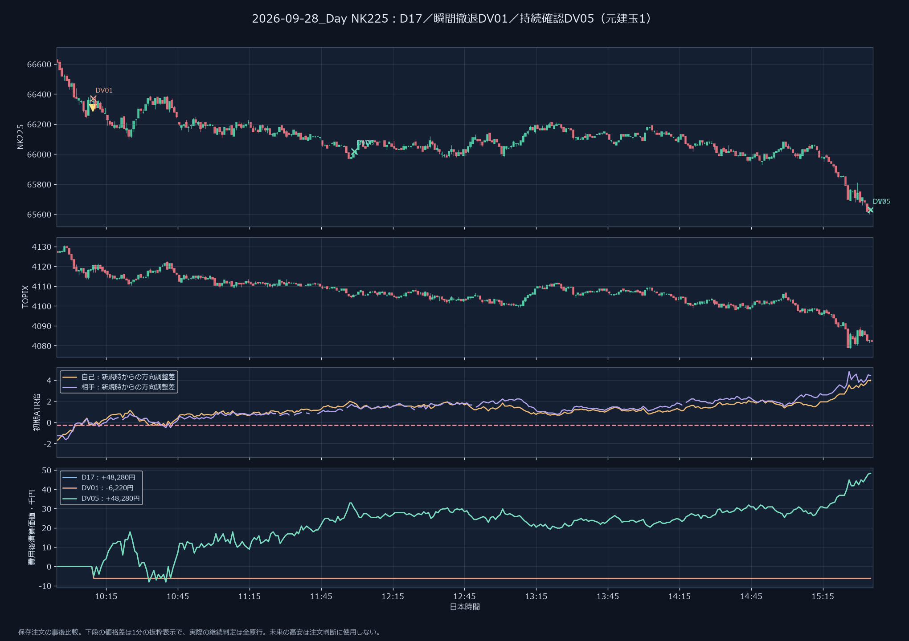
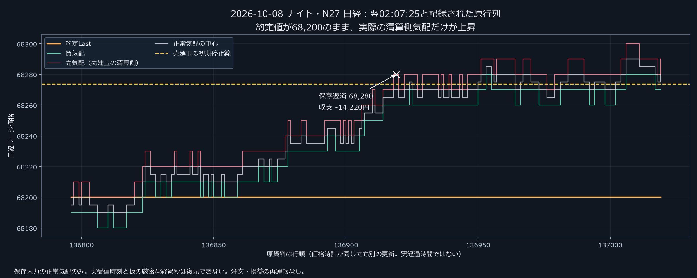

調査一覧チャートで失敗を確かめた改修と全セッション損益
日中は、逆行の持続確認で損失を縮める改善を確認。夜間は、両銘柄共通の安定性をまだ確認できていない。 合計黒字だけで完成とは判定しない。
日中の比較候補はTOPIXの120秒確認DV07、日経の60秒確認DV05。TOPIXは旧勝ちを残して3件の損失を計37,500円削減。赤字場数は両商品とも6/22のまま。共通120秒のDV07は日経の総収支を旧D17より5,500円減らすため、両商品で全面改善したわけではない。
通常はTOPIXミニ5枚／日経マイクロ10枚。数量比較NV18〜21は初期2枚／4枚、追加型の上限5枚／10枚。提示手数料込み、場内全返済。全43場は既知の開発資料。ラージの次正常原行気配を約定代理とし、実受信時計・実ミニ板の再現ではない。
何を直し、何が残ったか
日中：短い反発で勝ちを切る問題を改善
9月28日の日経は、瞬間撤退では売りを17秒で切って−6,220円。60秒の持続確認により、その後の下落を保有して＋48,280円を残せた。ただし、1分続く逆行から回復した10月8日の勝ちは依然切ってしまう。
具体時刻と反例売買位置の画像を見る

夜間：見ていた現在値と売買気配が違った
10月8日ナイト翌02:07:25、現在値68,200・出来高不変でも気配が上昇。売りの返済は68,280になった。中値で判断し直しても安定性は改善せず、早く入ると利益保護も早く始まる副作用があった。
具体時刻と反例売買位置の画像を見る

夜間：見送り中に古い発注準備を残さない
短期だけ順行し、両市場の120秒の動きは強く逆向きだった。発注を待つだけでは、後に不利な価格で入り直して同額の損失。準備を破棄するNV25は日経の最悪場を−13,220円から−8,220円へ縮めたが、無取引は8/21場。TOPIXの安定化には至らなかった。
具体時刻と反例検証手順 日中の改善と残る負け 夜間の改修で生じた失敗 数量の変更
各セッションの利益・損失・収支
夜間の初期表示N36は従来基準。最新の準備破棄型はNV24・NV25。選択は過去結果の表示だけで、無取引は黒字に数えない。NV04・05・07・08は60分差に不要な途中資料まで要求していたため、修正版NV10〜13も確認する。終値高安を使うNV06・09の全区間資格は意図した条件。
全条件の比較（36条件、銘柄間の円額は合算しない）
利益・損失は、同じ新規建玉の部分返済をまとめ、全手数料を差し引いた完結親単位の正負。再参加は別親。場の収支＝利益−損失。上昇・下落区分は事後採点専用で、注文判断には使用しない。
全数値の保存元 実装・監査と資料案内